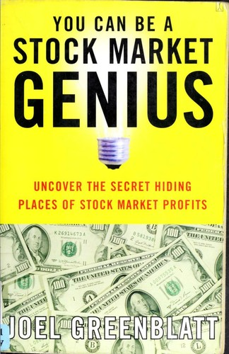

乔尔·格林布拉特（Joel Greenblatt）是哥谭资本（Gotham Capital）的创始人，该基金在1985年至1995年间实现了年化约50%的回报率，是美国共同基金史上最出色的长期业绩记录之一。《你也可以成为股市天才》出版于1997年，副标题是"揭开股市利润的秘密藏身之处"——这个有意为之的俗气书名，恰恰是格林布拉特的一种反向策略：让真正有价值的内容藏在一个看起来不那么正经的包装之下。
全书的核心论点是：散户投资者在"特殊情形"（special situations）领域拥有相对于机构投资者的结构性优势。格林布拉特所指的特殊情形包括分拆（spinoffs）、并购套利、破产重组后的新公司股票、重组证券、优先认股权证以及资本重整。在这些情形中，机构投资者由于规模限制、委托约束或信托义务，往往被迫抛售或回避——例如，当一家大型公司将子公司分拆上市，分拆出的新公司规模太小，大基金无法持有，于是原股东自动收到股票后便集中抛售，造成价格严重偏离内在价值。格林布拉特的洞察在于，这类情形的定价失效并非来自信息不对称，而是来自机构行为的结构性限制，有耐心的个人投资者反而占有优势。
书中以大量真实案例阐释各类特殊情形的识别与分析方法，涵盖如何阅读SEC文件（尤其是Form 10与14D-9）、如何评估管理层激励结构、如何估算分拆业务的独立价值。格林布拉特的分析风格务实而直接，他反复强调一个原则：不需要在所有情形下都具备信息优势，只需要找到那些机构因结构原因必须卖出、而基本面支撑你持有的少数机会，集中下注即可。他明确反对过度分散，认为真正的研究深度只能在持仓集中时才能实现。
本书在价值投资界享有持久声誉，常被列为特殊情形投资的奠基文献。沃顿商学院、哥伦比亚商学院的投资课程均将其列为参考书目。格林布拉特后来又写了《股市稳赚》（The Little Book That Beats the Market），提出以"神奇公式"为代表的系统化量化策略，但《你也可以成为股市天才》更接近他早期在哥谭资本的实战思路——一种依赖深度研究与特殊情形识别的主动投资哲学。对于希望超越"买入并持有指数基金"、寻找真正可执行超额收益来源的投资者，这本书至今仍是最具启发性的起点之一。